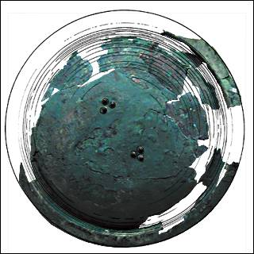

The Challenge -
Shield

Around 800 B.C. Assyrian shields had various shapes. The excavated remains as well as palace reliefs show that shields could be large rectangles designed to protect the whole body. These were often made of wicker-work. Others, like this one, were round and made of metal. Soldiers could move the round shields more easily to defend themselves from swords, spears and arrows. Some round shields were decorated with metal animal heads or spikes. The front of this shield only has rivets which originally held the handle in place on the other side.
|
|